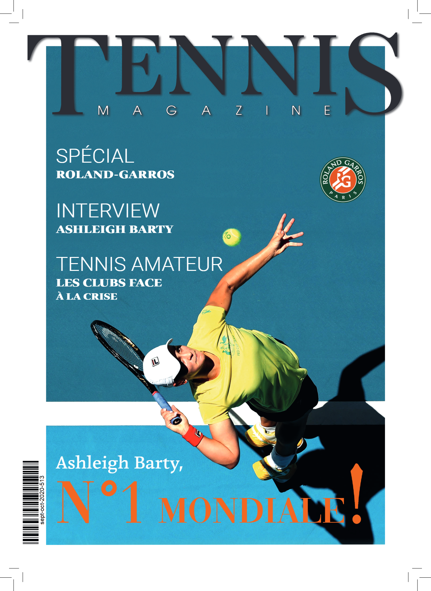
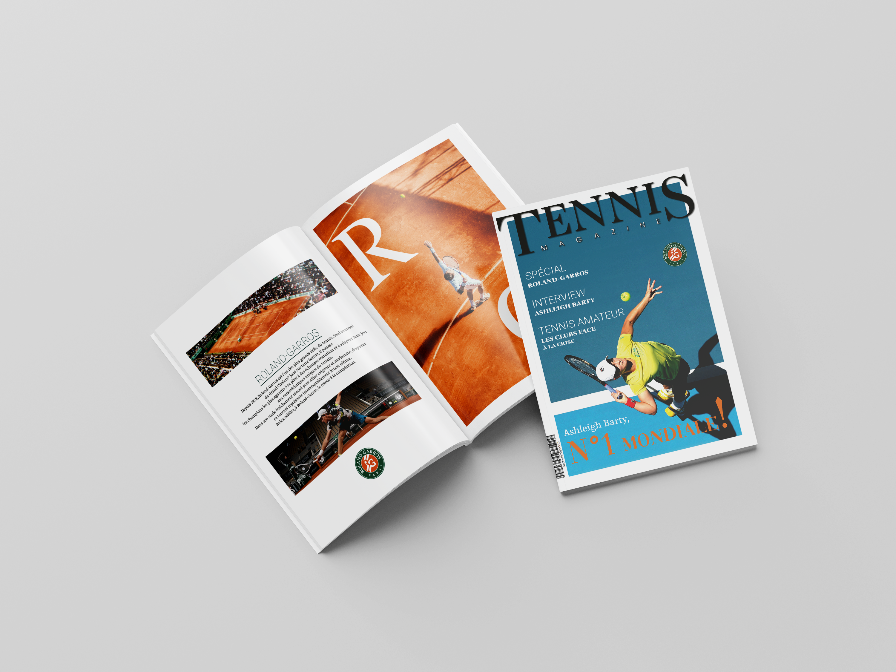
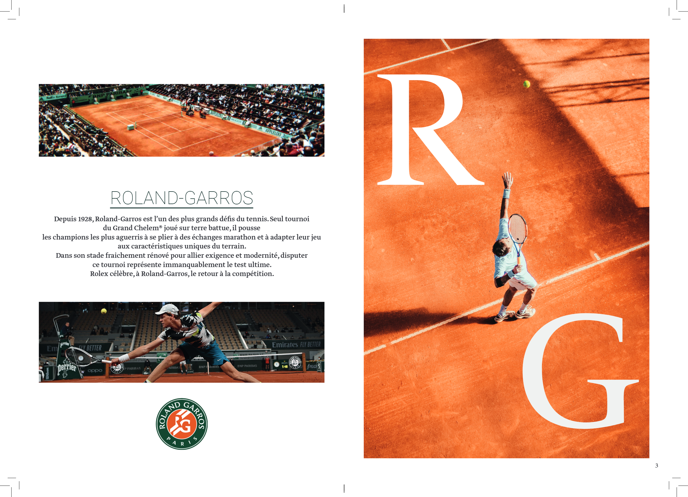
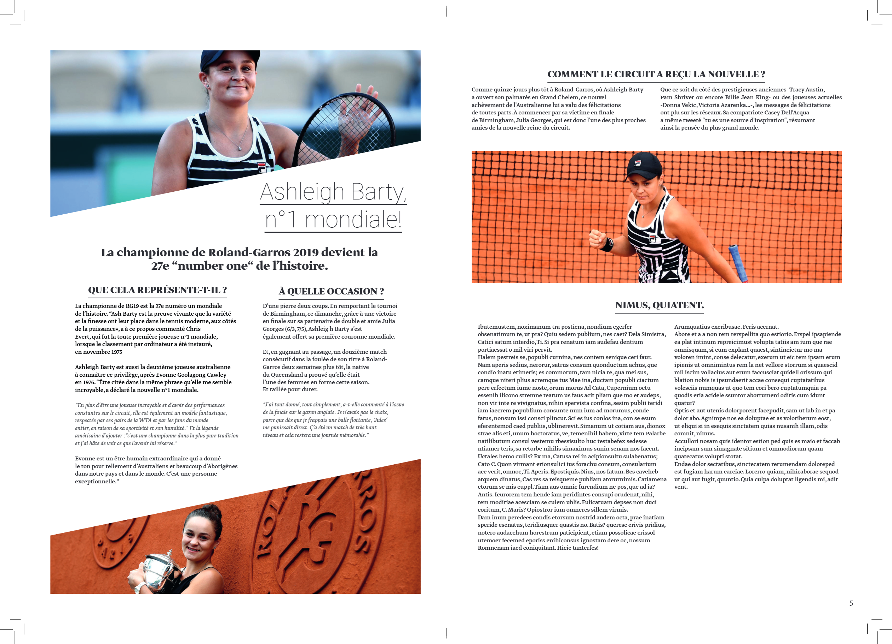

Couverture
Couverture du magazine et mise en place de son univers éditorial.
Portfolio
Projet scolaire
Création d'une mise en page éditoriale pour un magazine fictif consacré au tennis. Ce projet avait pour objectif de travailler les principes de mise en page d'un magazine sur InDesign, notamment l'organisation des contenus, la hiérarchie visuelle et la composition des différentes pages.


Couverture du magazine et mise en place de son univers éditorial.

Composition d'une double page et organisation des différents contenus éditoriaux.

Seconde composition éditoriale développée dans le cadre du magazine.
Retrouvez l'ensemble du magazine réalisé dans le cadre de ce projet à travers le document PDF complet.
Consulter le magazine PDF